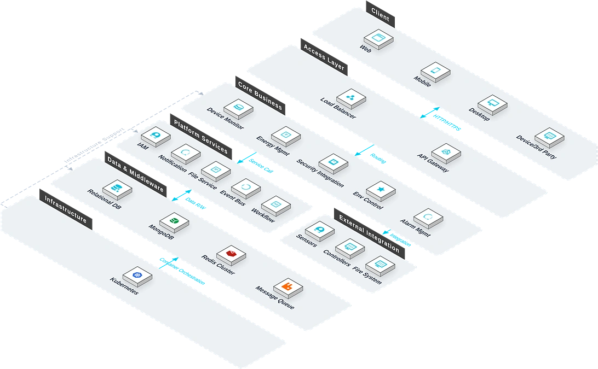

The IBMS Intelligent Building Management System integrates all building intelligence subsystems onto a single platform. Addressing the pain points of modern buildings with many independent intelligence subsystems that lead to fragmented management and delayed response, the system delivers multi-subsystem integration, centralised monitoring, intelligent linkage, and energy optimisation, achieving unified equipment management and coordinated control, helping enterprises improve O&M efficiency, reduce energy costs, and ensure safe building operation.

Key Features
The system covers six core modules: subsystem integration, centralised monitoring, linkage control, energy management, equipment O&M, and data analysis.
Subsystem Integration
Integrates 20+ subsystems (BA, security, fire, access, parking, energy, etc.) via multi-protocol gateways including BACnet, Modbus, and OPC UA.
Centralised Monitoring
Digital twin fuses BIM and IoT data, presenting building equipment status on a single panoramic view.
Linked Control
Distributed transaction engine enables cross-system automated response (fire alarm triggers access release, broadcast switchover, elevator recall, and exhaust).
Energy Management
Time-series database monitors water/electric energy in real time, with AI algorithms analysing usage patterns and generating energy-saving strategies.
Equipment O&M
Complete equipment ledger and maintenance plan, with failure prediction and intelligent diagnostics based on operating data.
Data Analysis
Aggregates equipment efficiency, energy trends, and failure rates, automatically generating operational analysis reports.
System Architecture
System Architecture

The system adopts a multi-protocol adaptation plus digital-twin architecture: five subsystems (BA/FA/SA/CA/OA) are integrated via multi-protocol gateways; the linkage service runs on DotNetCore.CAP for distributed transactions; the digital-twin service fuses BIM and IoT data with WebGL 3D visualisation; the energy analysis service is based on a time-series database for real-time water/electric monitoring and AI energy-saving.
Application Scenarios
Suitable for multi-subsystem integration, building centralised O&M, cross-system intelligent linkage, and energy monitoring and optimisation.

Multi-Subsystem Integration
Integrates 20+ subsystems via multi-protocol gateways, eliminating information silos.

Centralised Building O&M
Digital twin fuses BIM and IoT data, presenting equipment status on a panoramic view, improving O&M efficiency.

Cross-System Linkage
Fire alarm automatically triggers access release, broadcast switchover, elevator recall, and exhaust — achieving cross-system intelligent linkage.

Energy Monitoring & Optimisation
Real-time water/electric monitoring with AI-based usage analysis and energy-saving strategies, reducing energy costs.
Advantages & Cases
Open Multi-protocol Architecture
Supports multiple communication protocols such as BACnet, Modbus, and OPC UA, compatible with most brands of equipment on the market, protecting existing investments.
Digital Twin Visualization
Integrates BIM and IoT data, and realizes 3D visualization via the WebGL engine, making operation and maintenance management intuitive and efficient.
Intelligent Linkage Control
Realizes cross-system intelligent linkage based on the distributed transaction engine, with timely response and reliable linkage, forming a complete alarm-disposal closed loop.
AI Energy Saving Optimization
Analyzes energy consumption patterns based on time-series databases and AI algorithms, automatically generates energy saving strategies, and reduces building operation costs.
Unified Operation and Maintenance Entry
The five subsystems of BA/FA/SA/CA/OA are uniformly accessed via the multi-protocol gateway, enabling global control on one platform.
Elastic Expansion
The microservices architecture supports on-demand access to new subsystems and new equipment types, allowing smooth expansion as the building scale grows.
Requirement Research
Gain in-depth understanding of the current status of the building intelligent system and operation and maintenance requirements, and sort out the list of subsystems and integration priorities.
System Deployment
Supports local deployment and cloud deployment, and the multi-protocol gateway can quickly connect with existing equipment, adapting to buildings of different scales.
Training and Launch
Provides tiered training for administrators and operation and maintenance personnel, covering platform operation, alarm processing, energy consumption analysis, and report use.
Launch Acceptance
Acceptance is carried out in three stages: linkage testing, performance stress testing, and security scanning, to ensure the system is stable and reliable before official delivery.
Intelligent Building Management System for the Lagos Federal Inland Revenue Service (FIRS) Project
Background: A large government office building with a large number of building electromechanical and security subsystems, making daily operation and maintenance management complex.
Challenges: Each subsystem operates independently with decentralized management, there is a lack of a unified view of equipment operation status and energy consumption, and operation and maintenance responses are lagging.
Solution: Deploy the IBMS (Intelligent Building Management System), uniformly access subsystems such as building automation, security monitoring, and fire linkage to the platform, and realize centralized monitoring and intelligent linkage.
Result Data: Realized unified management and collaborative control of building equipment, significantly improved operation and maintenance efficiency, and effectively reduced energy consumption costs.
Customer Testimonial: ——